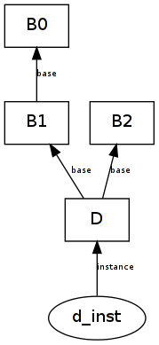

Classes are defined using the class keyword:
class Person:
pass
The simplest way to use a class is to add class attributes to it (similar to static members from C++/Java). Attributes are accessed via the usual object.attribute syntax:
Person.description = 'A living human'
assert Person.description == 'A living human'
However, this way of creating class attributes is rarely used. You can also add attributes to a class by placing assignments inside the class statement:
class Person:
count = 6930000000
assert Person.count == 6930000000
print Person.description # no longer available
Note that the class statement created a new class object and assigned it to the Person name. The previous class object assigned to Person had a description attribute, but that class object was lost. This is similar to how def and normal assignments work.
Classes are essentially namespaces backed by dictionaries:
print Person.__dict__
Person.__dict__['someattr'] = 'some value'
assert Person.someattr == 'some value'
del Person.someattr
assert 'someattr' not in Person.__dict__
You can also use the builtin functions getattr(), setattr(), hasattr() and delattr() to access attributes:
setattr(Person, 'someattr', 'some value')
assert hasattr(Person, 'someattr')
assert getattr(Person, 'someattr') == 'some value'
delattr(Person, 'someattr')
assert not hasattr(Person, 'someattr')
Classes are also instance factories. To create instances, you can treat classes like functions:
john = Person()
This the equivalent of the Java statement Person john = new Person();.
Instances can also have attributes (similar to non-static members in C++/Java):
john.age = 34
assert john.age == 34
assert getattr(john, 'age') == 34
assert john.__dict__['age'] == 34
Instances store their class in a special attribute:
assert john.__class__ is Person
You can create multiple instances for the same class:
alice = Person()
assert alice is not john
assert alice.__class__ is john.__class__
assert not hasattr(alice, 'age')
You can create subclasses (or derived classes) by listing the superclasses (or base classes) as arguments to the class statement:
class Base:
pass
class Derived(Base):
pass
You can use issubclass() and isinstance() to test inheritance relations (but don’t abuse them):
assert issubclass(Derived, Base)
assert issubclass(Derived, Derived)
assert not issubclass(Base, Derived)
class Unrelated:
pass
assert not issubclass(Derived, Unrelated)
derived = Derived()
assert isinstance(derived, Derived)
assert isinstance(derived, Base)
assert not isinstance(Base(), Derived)
You shouldn’t normally need these two functions, because Python encourages duck typing. To find out more read isinstance() considered harmful.
Python also supports multiple inheritance:
class B1:
pass
class B2:
pass
class D(B1, B2):
pass
assert issubclass(D, B1) and issubclass(D, B2)
The tuple of base classes are stored in the special __bases__ class attribute:
assert D.__bases__ == (B1, B2)
assert B1.__bases__ == ()
Accessing attributes via object.__dict__['name'] does a normal dictionary lookup. However, object.name (or its equivalent getattr(object, 'name')) triggers an attribute search.
An attribute search will look at the object’s __dict__, but will continue the search with the object’s __class__ (if the object is an instance) and continue up the inheritance tree until the attribute is found or all possibilities are exhausted.
Let’s look at simple example:
class B0:
z = 0
class B1(B0):
x = 1
y = 2
class B2:
y = 3
z = 4
class D(B1, B2):
x = 5
d_inst = D()
d_inst.t = 6
The relations between instances and classes can be represented as a directed acyclic graph:

An attribute search for d_inst will try the nodes from this graph from bottom to top and from left to right (the preordering from depth-first search):
| Node | Attributes |
|---|---|
| d_inst | t = 6 |
| D | x = 5 |
| B1 | x = 1, y = 2 |
| B0 | z = 0 |
| B2 | y = 3, z = 4 |
Note that the order of the base classes affects attribute searches.
Now you can understand the results of the following attribute searches:
assert d_inst.t == 6
assert d_inst.x == 5
assert d_inst.y == 2
assert d_inst.z == 0
assert D.z == 0
assert B2.z == 4
Updating or deleting attributes directly update the object’s __dict__ (they don’t trigger a search):
obj.attribute = value
setattr(obj, 'attribute', 'value')
del obj.attribute
delattr(obj, 'attribute')
Special attributes like __bases__, __dict__, __class__ do not trigger attribute searches.
Write a function which returns a list of instances and classes in the order used by an attribute search:
where start is the starting point of the attribute search (instance or class).
Hints:
To find out if an object is an instance or a class compare the return of type() with types.InstanceType or types.ClassType:
import types
assert type(d_inst) == types.InstanceType
assert type(D) == types.ClassType
You can keep track of processed nodes in a set. If you implement the depth-first search recursively, you can make the function reentrant by using local variables for state and an inner function which does the real work.
Unit test:
def test_attrsearch_order():
# the previous example
class B0: pass
class B1(B0): pass
class B2: pass
class D(B1, B2): pass
d_inst = D()
assert attrsearch_order(d_inst) == [d_inst, D, B1, B0, B2]
# diamond inheritance
class B0: pass
class B1(B0): pass
class B2(B0): pass
class D(B1, B2): pass
assert attrsearch_order(D) == [D, B1, B0, B2]
Let’s assume we have a Person class and a few instances:
class Person:
pass
a = Person()
a.first_name = 'John'
a.last_name = 'Smith'
b = Person()
b.first_name = 'Jane'
b.last_name = 'Doe'
and we want to define a function which takes a Person instance and returns the full name:
def full_name(person):
return person.first_name + " " + person.last_name
assert full_name(a) == 'John Smith'
assert full_name(b) == 'Jane Doe'
This works, but it’s a bit clumsy to have to define the function in the global scope, so let’s make it a class attribute:
class Person:
def full_name(person):
return person.first_name + " " + person.last_name
a = Person()
a.first_name = 'John'
a.last_name = 'Smith'
b = Person()
b.first_name = 'Jane'
b.last_name = 'Doe'
assert Person.full_name(a) == 'John Smith'
assert Person.full_name(b) == 'Jane Doe'
This works as expected, but we could make this even better by taking advantage of the attribute search: we can get the function object we need by starting the attribute search from the instance: a.full_name.
There’s an extra bit of magic embedded in attribute searches when it starts from an instance and the result is a function and a class attribute: the instance is passed as the first argument to the function automatically:
assert Person.full_name(a) == a.full_name()
assert Person.full_name(b) == b.full_name()
This works even if the function object is saved for later use:
f = a.full_name
print f()
How does f remember to pass the correct instance as the first parameter? It turns out that the attribute search returns a different kind of object:
print a.full_name
assert a.full_name.im_self is a
assert a.full_name.im_class is Person
assert a.full_name.im_func is Person.__dict__['full_name']
This kind of object is called bound method. Bound methods are objects that combine a class (im_class), an instance (im_self) and a function (im_func):
assert a.full_name() == a.full_name.im_func(a.full_name.im_self)
Unbound methods are created when the search starts from a class object. They are similar to bound methods except they have no im_self:
print Person.full_name
assert Person.full_name.im_class is Person
assert Person.full_name.im_func is Person.__dict__['full_name']
assert Person.full_name(a) == Person.full_name.im_func(a)
Method objects are only created when the result comes from a class attribute:
def f():
return 'fake'
b.full_name = f
assert b.full_name is f
assert b.full_name() == 'fake'
By convention, the first parameter for instance methods is usually called self. It has the same meaning as this from Java/C++. Note that you can’t omit self when referring to instance attributes from a method (otherwise you will create/update a local name).
To create a constructor just add a method called __init__. Let’s look at the complete example written in the usual Python style:
class Person:
def __init__(self, first_name, last_name):
self.first_name = first_name
self.last_name = last_name
def full_name(self):
return self.first_name + " " + self.last_name
a = Person('John', 'Smith')
b = Person('Jane', 'Doe')
assert a.full_name() == 'John Smith'
assert b.full_name() == 'Jane Doe'
The attribute search order is also called method resolution order (mro) because its main purpose is to make method overriding possible:
class Base:
def f(self):
return 'base'
class Derived(Base):
def f(self):
return 'derived'
b = Base()
d = Derived()
assert b.f() == 'base'
assert d.f() == 'derived'
d.f() will call the Derived.f function because Derived comes before Base in the method resolution order for d.
To call the base class version of an overridden method, simply start the attribute search from the base class:
class Base:
def f(self):
return 'base'
class Derived(Base):
def f(self):
return Base.f(self) + 'derived'
b = Base()
d = Derived()
assert b.f() == 'base'
assert d.f() == 'basederived'
You can find out the method resolution order by calling inspect.getmro() on a class object:
import inspect
class B0: pass
class B1(B0): pass
class B2(B0): pass
class D(B1, B2): pass
assert inspect.getmro(D) == (D, B1, B0, B2)
Write the following classes:
Class attribute counting how many Person objects were ever created.
Returns a string containing the name of the person.
This class should inherit from Person.
Returns a string containing the name, title and salary.
When overriding methods __init__ and get_info, try to reuse the superclass method (to avoid duplication).
Unit test:
def test_employee():
count = Person.count
a = Person('A')
assert a.get_info() == 'A'
assert Person.count == count + 1
b = Employee('John Smith', 'Engineer', 200)
assert b.get_info() == 'John Smith Engineer 200'
assert Person.count == count + 2
You might want to create methods which are applicable to the whole class as opposed to one instance (static methods in C++/Java). Unfortunately it is not possible to use unbound methods without a parameter:
class Base:
count = 0
def get_base_count():
return Base.count
def __init__(self):
Base.count += 1
b = Base()
assert Base.__dict__['get_base_count']() == 1
assert Base.get_base_count() == 1 # unbound method
assert b.get_base_count() == 1 # bound method
The last two asserts fail because the attribute searches for get_base_count return method objects which require an instance as the first argument.
The staticmethod() function can be used (as a decorator) to bypass the transformation of functions from a class __dict__ into bound or unbound methods:
class Base:
count = 0
@staticmethod
def get_base_count():
return Base.count
def __init__(self):
Base.count += 1
b = Base()
assert Base.get_base_count() == 1
assert b.get_base_count() == 1
There is no access control for attributes, but by convention, a single leading underscore in the name is an indication that the attribute is an implementation detail and could change at any time.
However, there’s a feature called name mangling: Any identifier of the form __attribute (starts with __, but doesn’t end with __) is textually replaced with _classname__attribute, where classname is the name of the class currently being defined:
class A:
# define A._A__count
__count = 0
def __init__(self):
# update A._A__count
A.__count += 1
class B:
# define B._B__count
__count = 0
def __init__(self):
# update B._B__count
B.__count += 1
# update A._B__count: not possible!
# A.__count += 1
The attributes can still be used by manually mangling their names:
A()
B()
B()
assert A._A__count == 1
assert B._B__count == 2
A._A__count = 100
assert A._A__count == 100
Name mangling is very rarely used.
Any operation invoked using built-in Python functions or operators can be overridden by defining methods with special names. In fact, you already saw one example: the class constructor. The “call” syntax Class(*args, **kwargs) is translated into Class.__init__(self, *args, **kwargs).
The full list of methods that respond to special syntax is available in the Python documentation: special method names. Let’s look at the most useful methods.
These methods are called in response to the built-in functions str() and repr(). Print automatically calls str for any argument which is not a string object:
class Person:
def __init__(self, first_name, last_name):
self.first_name = first_name
self.last_name = last_name
print Person('John', 'Doe')
The default string representation is not very useful. Let’s change it:
class Person:
def __init__(self, first_name, last_name):
self.first_name = first_name
self.last_name = last_name
def __str__(self):
return self.first_name + ' ' + self.last_name
def __repr__(self):
return '<Person: %s %s>' % (self.first_name, self.last_name)
p = Person('John', 'Doe')
print p
print str(p)
print repr(p)
When evaluating str(object) Python will fall back to __repr__ if __str__ is not defined (but not the other way around).
The Python shell prints will print the repr() form for the results of typed expressions.
Change the Person and Employee classes defined earlier to respond to str() instead of Person.get_info(). Also make them respond to repr().
Unit test:
def test_employee2():
count = Person.count
a = Person('A')
assert str(a) == 'A'
assert repr(a) == "<Person: name='A'>"
b = Employee('John Smith', 'Engineer', 200)
assert str(b) == 'John Smith Engineer 200'
assert repr(b) == "<Employee: name='John Smith', title='Engineer', salary=200>"
test_employee2()
You can test if a list is empty or not by using the list with if or while:
a = [1, 2, 3]
if a:
print 'not empty'
while a:
print a.pop()
You can enable this behavior in your class by defining the __nonzero__ method:
class Person:
def __init__(self, name, alive=True):
self.name = name
self.alive = alive
def die(self):
self.alive = False
def __nonzero__(self):
return self.alive
john = Person('John')
assert bool(john) == True
if john:
print 'John is alive!'
john.die()
assert bool(john) == False
if not john:
print 'John is dead.'
As you can see, the bool() function also uses this special method.
If __nonzero__ is not defined, Python falls back to __len__ (which is normally called in response to len()).
| Expression | Method call |
|---|---|
| x == y | x.__eq__(y) |
| x != y | x.__ne__(y) |
| x < y | x.__lt__(y) |
| x > y | x.__gt__(y) |
| x <= y | x.__le__(y) |
| x >= y | x.__ge__(y) |
You can use functools.total_ordering() to avoid defining all 6 methods.
Overload the comparison operators to compare two employees by salary, title and name.
Unit test:
def test_employee3():
tb = Employee('Thomas Brin', 'CEO', 500)
js = Employee('John Smith', 'Engineer', 200)
jd = Employee('John Doe', 'Engineer', 200)
ba = Employee('Brian Adams', 'Contractor', 200)
assert tb == tb
assert tb >= tb
assert tb <= tb
assert tb != js
assert js > jd
assert tb > js
assert js >= jd
assert tb >= js
assert jd < js
assert js < tb
assert jd <= js
assert js <= tb
assert sorted([tb, js, jd, ba]) == [ba, jd, js, tb]
This is similar to __init__, but for instances: instance(*args, **kwargs) calls instance.__call__(*args, **kwargs). Here’s a rewrite of the incrementer from Nested Functions with classes:
class incrementer:
def __init__(self, step=1):
self.value = 0
self.step = step
def __call__(self):
self.value += self.step
return self.value
a = incrementer()
print a()
print a()
print a()
b = incrementer(5)
print b()
print b()
print b()
Defining __call__ will make instances for that class behave like functions, so you can pass them as callbacks to library functions. This is useful especially when you need to preserve state between calls, like in the example above.
To find out if an object is callable you can use the built-in function callable().